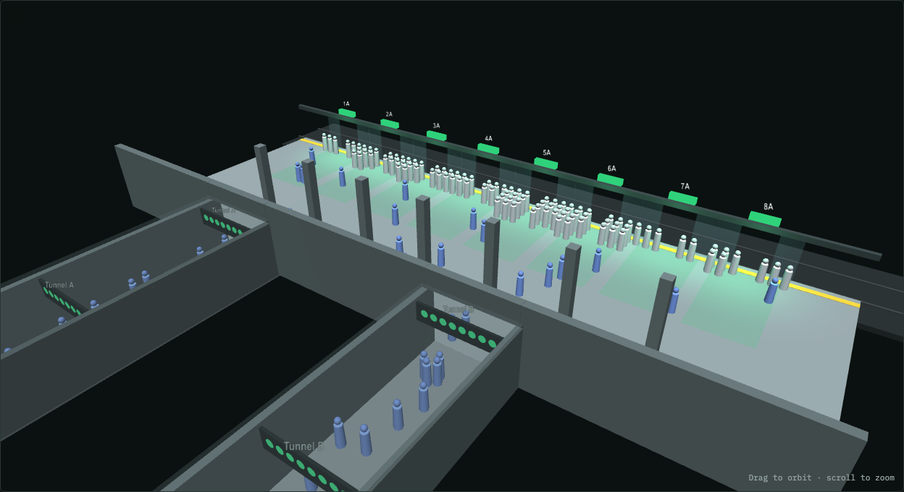
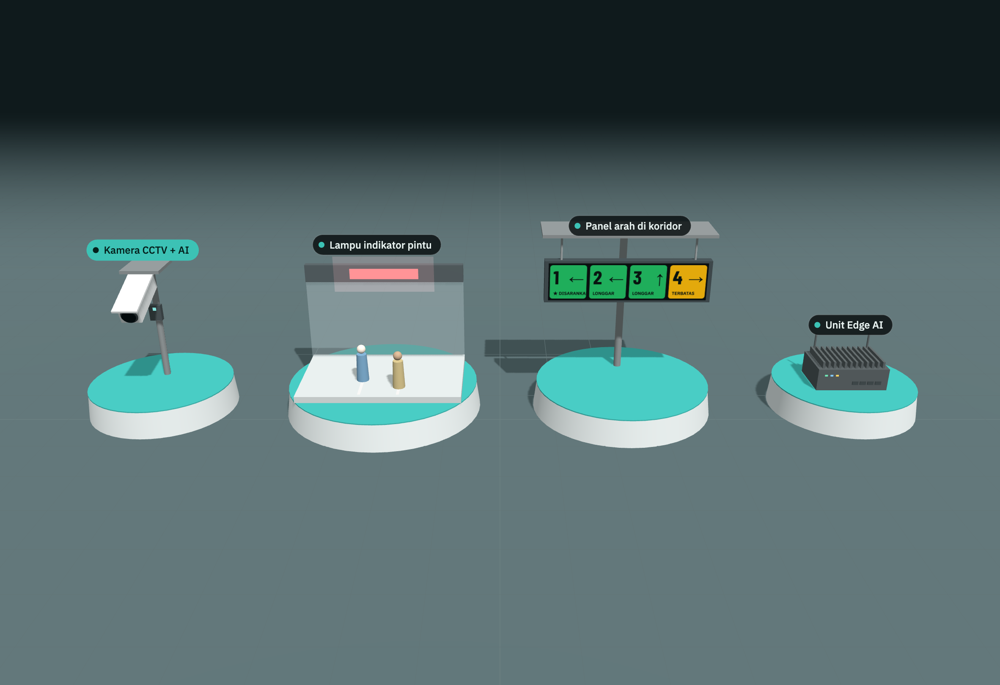

Admiralty Platform Flow
Dynamic green, amber and red lights in the access tunnels and above each platform door. An AI model predicts how much room each door will have on the next train and steers waiting passengers there before they pick a queue.
Working prototype · runs in any browserResult at Monday 09:00 rush
Queues across the 8 doors become far more even.
No single door turns into a crush point.
People who could not board the next train because their door was full.
From reaching the platform to boarding.
Average of 5 simulated hours, with 60% of passengers following the lights, 240 arrivals per minute and a train every 2 minutes. The alighting forecast also became 32% more accurate (error 5.6 → 3.8 passengers per car) after learning from each train.
Try the prototype

2D simulator
Open live demo ↗Two identical platforms side by side: without guidance and with AI lights. Live scores, imbalance chart, and the AI's per-door forecast table.

3D platform
Open live demo ↗The same model in 3D: tunnels with signs, door lights, people arriving, queuing and getting off. Toggle the AI on and off.

Hardware: only 4 devices
CCTV camera with AI counting, corridor sign, door indicator light and an edge AI unit. Train load and gate data come from systems MTR already runs.
Does it really spread passengers out?
We tested it. Both platforms receive the exact same passengers and trains, so any difference comes from the lights alone. 120 runs: 4 scenarios × 6 compliance levels × 5 random seeds, 60 simulated minutes each.
Queue imbalance vs. share following the lights
People left behind per hour
Even when only 1 in 5 passengers follows the lights, people left behind fall by more than 90% at rush hour. At 0% the AI platform behaves like the normal one, which confirms the effect comes from the guidance.
All scenarios at 60% following the lights
| Scenario | Imbalance | Longest queue | Left behind / h | Avg wait | Forecast error |
|---|
Each cell shows without guidance → with AI. Off-peak, nobody is left behind either way. The lights still even out queues, at a cost of about 1.5 seconds extra walking. Forecast error is the average miss in passengers per car: historical average → AI forecast.
Screenshots

How the prototype works
Collect
Queue count per door, load per car of the approaching train, and historical alighting by station, day and hour.
Predict
Forecast how many people leave each car, then the room each door will have: capacity − load + alighting.
Recommend
Ratio = people queuing or walking to a door ÷ predicted room. Under 0.7 green, under 1.0 amber, else red.
Update lights
Tunnel signs and door lights refresh every 2 seconds. A door with an over-full queue area is red regardless.
Evaluate
Score evenness, left behind and wait. Feed each train's real alighting back to correct the forecast.
Where the AI does real work
- Forecasting: starts from the historical average and learns a correction per car from every train, so it adapts to today's pattern.
- Decision: lights follow predicted room, not just the current queue. A busy-looking door stays green if many people are about to get off there.
- Anti-herding: followers are spread across green doors in proportion to spare room, so a green door never becomes the next hotspot.
Honest limits of this prototype
- All data is simulated. A pilot adds only 4 devices (camera, corridor sign, door lights, edge unit) and reuses MTR's existing train load sensors, CCTV and gate data.
- Passengers without guidance are modelled as queuing near their tunnel. Real behaviour should be measured in a pilot.
- The forecast learns per train within a session. The production design stores data and averages each day-and-hour slot over recent weeks.
- The lights advise passengers and staff. They do not replace staff, platform screen doors or safety systems.
Built with plain HTML and JavaScript (2D) and Three.js (3D). No server needed. Results reproduce with python3 proof/run_benchmark.py, which runs the exact model from the simulator and writes results.csv and summary.csv.